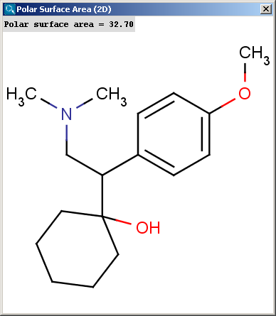
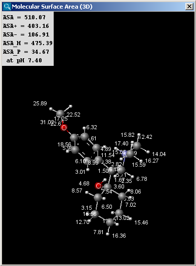

Calculator Plugins
Geometry
Topology Analysis Plugin
The Topology Analysis plugin provides characteristic values
related to the topological structure of a molecule.
Simple
- Atom count: number of atoms in the molecule including
hydrogens.
- Bond count: number of bonds in the molecule including
hydrogens.
- Cyclomatic number: the smallest number of bonds which
must be removed such that no circuit remains. Also known as circuit
rank.
Ring
- Ring count: number of rings in the molecule. This
calculation is based on SSSR (Smallest Set of Smallest Rings).
- Ring atom count: number of ring atoms.
- Ring bond count: number of ring bonds.
- Chain atom count: number of chain atoms (non-ring atoms
excluding hydrogens).
- Chain bond count: number of chain bonds (non-ring bonds
excluding bonds of hydrogen atoms).
- Aliphatic ring count: number of those rings in the
molecule, which have non-aromatic bonds (SSSR based).
- Aromatic ring count: number of aromatic rings in the
molecule. This number is calculated from the smallest set of smallest
aromatic rings (SSSAR), which might contain rings which are not part of
the standard SSSR ring set. As a consequence, the sum of the aliphatic
ring count and the aromatic ring count can sometimes be greater the the
ring count value. The difference is the sign of a macroaromatic ring
system.
- Aliphatic atom count: number of atoms in the molecule
having no aromatic bond (excluding hydrogens).
- Aliphatic bond count: number of non-aromatic bonds in
the molecule (excluding bonds of hydrogen atoms).
- Aromatic atom count: number of atoms in the molecule
having aromatic bonds.
- Aromatic bond count: number of aromatic bonds in the
molecule.
- Carbo ring count: number of those rings in the
molecule, which contain carbon atoms only.
- Hetero ring count: number of those rings in the
molecule, which contain hetero atoms.
- Heteroaromatic ring count: number of aromatic
heterocycles in the molecule.
- Carbooaromatic ring count: number of heterocycles in
the molecule containing carbon atoms only (SSSAR based).
- Fused ring count: number of fused rings in the molecule
(having common bonds).
- Fused aliphatic ring count: number of aliphatic rings
having common bonds with other rings.
- Fused aromatic ring count: number of aromatic rings
having common bonds with other rings.
- Largest ring size: size of the largest ring in the
molecule.
- Smallest ring size: size of the smallest ring in the
molecule.
Path based
- Platt index: sum of the edge degrees of a molecular
graph.
- Randic index: harmonic sum of the geometric means of
the node degrees for each edge.
Distance based
- Balaban index: the Balaban distance connectivity of the
molecule, which is the average distance sum connectivity.
- Distance degree: the sum of the corresponding row
values in the distance matrix for each atom.
- Eccentricity: the greatest value in the corresponding
row of the distance matrix for each atom.
- Harary index: half-sum of the off-diagonal elements of
the reciprocal molecular distance matrix of the molecule.
- Hyper Wiener index: a variant of the Wiener index.
- Szeged index: The Szeged index extends the Wiener index
for cyclic graphs by counting the number of atoms on both sides of each
bond (those atoms only which are nearer to the given side of the bond
than to the other), and sum these counts.
- Wiener index: the average topological atom distance
(half of the sumof all atom distances) in the molecule.
- Wiener polarity: the number of 3 bond length distances
in the molecule.
Other
- Asymmetric atom count: the number of asymmetric atoms
(having four different ligands).
- Chiral center count: the number of tetrahedral
stereogenic centers. This function identifies two chiral centers in
1,4-dimethylcyclohexane, which does not contain asymmetric atoms.
- Rotatable bond count: number of rotatable bonds in the
molecule. Unsaturated bonds, and single bonds connected to hydrogens or
terminal atoms, single bonds of amides, sulphonamides and those
connecting two hindered aromatic rings (having at least three ortho
substituents) are considered non-rotatable.
- Steric effect index: topological steric effect index
(TSEI) of an atom calculated from the covalent radii values and
topological distances. The stericEffectIndex is related to the steric
hindrance of the given atom.
Geometry Plugin
The Geometry plugin provides characteristic values related to the
geometrical structure of a molecule. It can calculate interatomic
distances, bond angles, dihedral angles, steric hindrance and Dreiding
energy. The calculation can predict and use the lowest energy conformer
of the input structure.
Calculations
- Dreiding energy: energy related to the stability of the
actual 3D structure (conformation) of the molecule.
- Steric hindrance: steric hindrance of an atom calculated from
the covalent radii values and geometrical distances.
- Distance: distance between two atoms.
- Bond angle: the angle that is formed between two adjacent
bonds on the same atom.
- Dihedral angle: dihedral angle of four atoms.
Polar Surface Area Plugin (2D)
Polar surface area (PSA) is formed by polar atoms of a molecule.
It is a descriptor that shows good correlation with passive molecular
transport through membranes, and so allows estimation of transport
properties of drugs. Estimation of topoligical polar surface area (TPSA)
is based on the method given in Ref.4.. The
method provides results which are practically identical with the 3D PSA,
while calculation time of TPSA is approximately 100-times faster. This
method is more suitable for fast bioavailability screening of large
virtual libraries. The TPSA value can be calculated both for the neutral form and
the major microspecies.
|  |
 |
Molecular Surface Area Plugin (3D)
There are two types of available molecular surface area
calculations: Van der Waals and solvent accessible. Calculation method
is based on the publication of Ferrara et al. (Ref.6.).
 |
 |